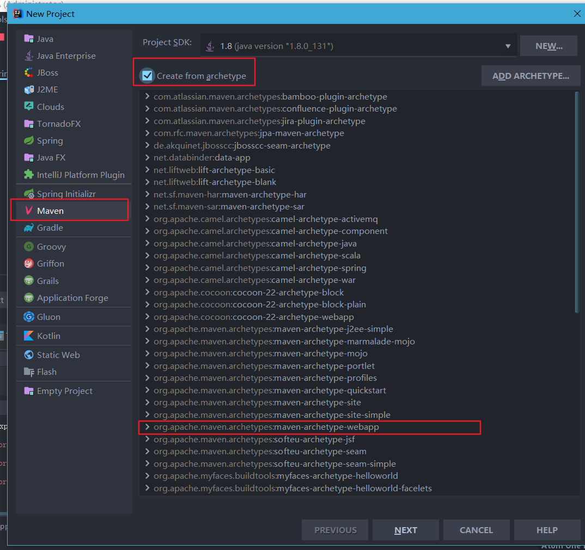
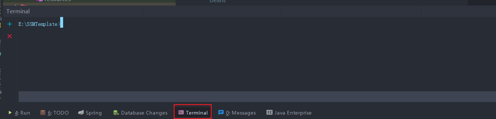
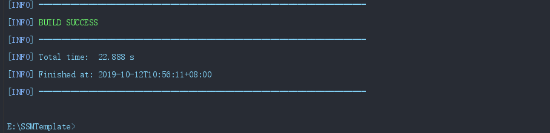
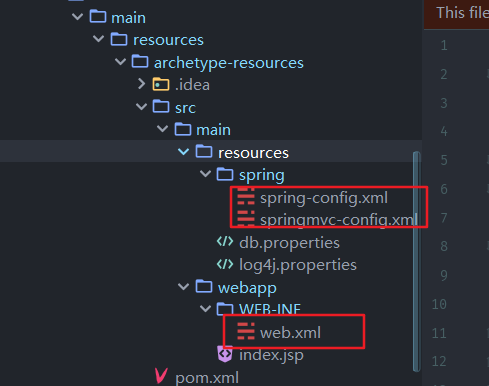
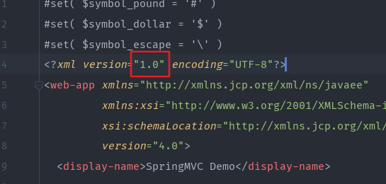
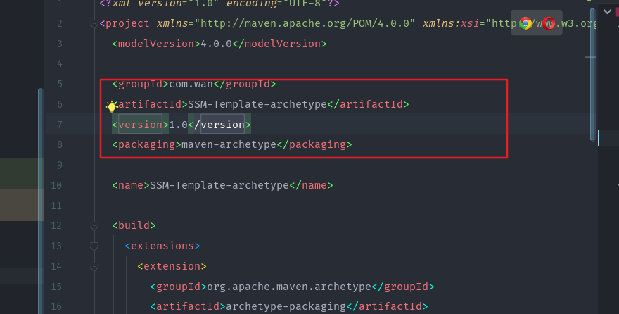
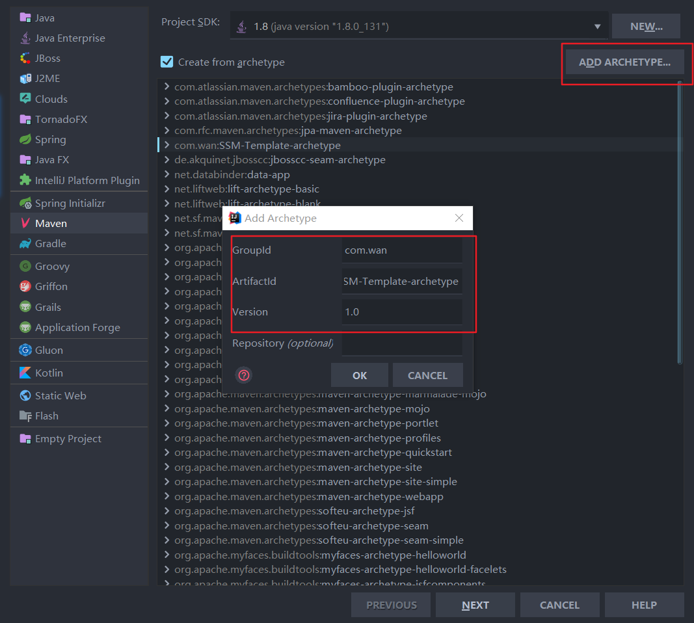
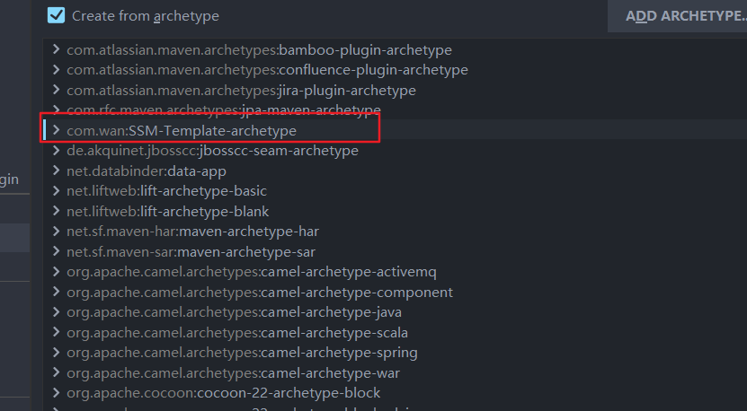
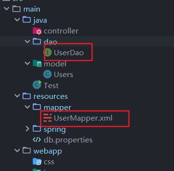

Spring+Spring MVC+MyBatis+Maven
SSM整合的核心还是Spring+MyBatis的整合，回顾一下MyBatis操作数据库流程，我们是使用一个SQLSessionFactory对象来获得SQLSession，之后再进行CRUD操作。
现在，有了spring，我们就把SQLSessionFactory通过spring进行装载和管理。
如果是想直接使用的话，请去SSM-Maven-Archetype

<?xml version="1.0" encoding="UTF-8"?>
<project xmlns="http://maven.apache.org/POM/4.0.0"
xmlns:xsi="http://www.w3.org/2001/XMLSchema-instance"
xsi:schemaLocation="http://maven.apache.org/POM/4.0.0 http://maven.apache.org/xsd/maven-4.0.0.xsd">
<modelVersion>4.0.0</modelVersion>
<groupId>com.wan</groupId>
<artifactId>SSM-Template</artifactId>
<version>1.0-SNAPSHOT</version>
<packaging>war</packaging>
<name>SSM-Template Maven Webapp</name>
<!-- FIXME change it to the project's website -->
<url>http://www.example.com</url>
<properties>
<project.build.sourceEncoding>UTF-8</project.build.sourceEncoding>
<maven.compiler.source>1.7</maven.compiler.source>
<maven.compiler.target>1.7</maven.compiler.target>
</properties>
<dependencies>
<dependency>
<groupId>junit</groupId>
<artifactId>junit</artifactId>
<version>4.11</version>
<scope>test</scope>
</dependency>
<!--日志-->
<dependency>
<groupId>commons-logging</groupId>
<artifactId>commons-logging</artifactId>
<version>RELEASE</version>
</dependency>
<dependency>
<groupId>org.springframework</groupId>
<artifactId>spring-context</artifactId>
<version>4.3.9.release</version>
</dependency>
<dependency>
<groupId>org.springframework</groupId>
<artifactId>spring-context-support</artifactId>
<version>4.3.9.release</version>
</dependency>
<dependency>
<groupId>org.springframework</groupId>
<artifactId>spring-test</artifactId>
<version>4.3.9.release</version>
</dependency>
<dependency>
<groupId>org.springframework</groupId>
<artifactId>spring-core</artifactId>
<version>4.3.9.release</version>
</dependency>
<dependency>
<groupId>org.springframework</groupId>
<artifactId>spring-beans</artifactId>
<version>4.3.9.release</version>
</dependency>
<dependency>
<groupId>org.springframework</groupId>
<artifactId>spring-expression</artifactId>
<version>4.3.9.release</version>
</dependency>
<dependency>
<groupId>org.springframework</groupId>
<artifactId>spring-web</artifactId>
<version>4.3.9.release</version>
</dependency>
<dependency>
<groupId>org.springframework</groupId>
<artifactId>spring-webmvc</artifactId>
<version>4.3.9.release</version>
</dependency>
<dependency>
<groupId>org.springframework</groupId>
<artifactId>spring-orm</artifactId>
<version>4.3.9.release</version>
</dependency>
<!--AOP-->
<dependency>
<groupId>org.springframework</groupId>
<artifactId>spring-aop</artifactId>
<version>4.3.9.release</version>
</dependency>
<dependency>
<groupId>org.aspectj</groupId>
<artifactId>aspectjweaver</artifactId>
<version>RELEASE</version>
</dependency>
<dependency>
<groupId>aopalliance</groupId>
<artifactId>aopalliance</artifactId>
<version>RELEASE</version>
</dependency>
<!-- springmvc依赖的json库（如果使用@responsebody注解返回json数据） -->
<dependency>
<groupId>com.fasterxml.jackson.core</groupId>
<artifactId>jackson-core</artifactId>
<version>2.7.3</version>
</dependency>
<dependency>
<groupId>com.fasterxml.jackson.core</groupId>
<artifactId>jackson-databind</artifactId>
<version>2.7.3</version>
</dependency>
<dependency>
<groupId>org.apache.commons</groupId>
<artifactId>commons-lang3</artifactId>
<version>3.3.2</version>
</dependency>
<dependency>
<groupId>javax.servlet</groupId>
<artifactId>javax.servlet-api</artifactId>
<version>4.0.1</version>
</dependency>
<!-- jstl 1.2.5 version libarary -->
<dependency>
<groupId>org.apache.taglibs</groupId>
<artifactId>taglibs-standard-spec</artifactId>
<version>1.2.5</version>
</dependency>
<dependency>
<groupId>org.apache.taglibs</groupId>
<artifactId>taglibs-standard-impl</artifactId>
<version>1.2.5</version>
</dependency>
<!-- oracle driver -->
<dependency>
<groupId>com.github.noraui</groupId>
<artifactId>ojdbc8</artifactId>
<version>12.2.0.1</version>
</dependency>
<!-- mybatis orm框架 -->
<dependency>
<groupId>org.mybatis</groupId>
<artifactId>mybatis</artifactId>
<version>3.5.2</version>
</dependency>
<!--阿里巴巴连接池-->
<dependency>
<groupId>com.alibaba</groupId>
<artifactId>druid</artifactId>
<version>1.1.10</version>
</dependency>
<!-- spring整合mybatis -->
<dependency>
<groupId>org.mybatis</groupId>
<artifactId>mybatis-spring</artifactId>
<version>2.0.2</version>
</dependency>
<!--文件上传-->
<dependency>
<groupId>commons-fileupload</groupId>
<artifactId>commons-fileupload</artifactId>
<version>1.3.1</version>
</dependency>
<!-- 日志库 -->
<dependency>
<groupId>org.slf4j</groupId>
<artifactId>slf4j-api</artifactId>
<version>1.7.25</version>
</dependency>
<dependency>
<groupId>org.slf4j</groupId>
<artifactId>slf4j-log4j12</artifactId>
<version>1.7.25</version>
</dependency>
<!-- apache libraries -->
<dependency>
<groupId>log4j</groupId>
<artifactId>log4j</artifactId>
<version>1.2.17</version>
</dependency>
<dependency>
<groupId>org.apache.logging.log4j</groupId>
<artifactId>log4j-core</artifactId>
<version>2.5</version>
</dependency>
<!--MyBatis分页插件-->
<dependency>
<groupId>com.github.pagehelper</groupId>
<artifactId>pagehelper</artifactId>
<!--自动下载最新版本 -->
<version>5.1.6</version>
</dependency>
</dependencies>
<build>
<finalName>SSM-Template</finalName>
<pluginManagement><!-- lock down plugins versions to avoid using Maven defaults (may be moved to parent pom) -->
<plugins>
<plugin>
<artifactId>maven-clean-plugin</artifactId>
<version>3.1.0</version>
</plugin>
<!-- see http://maven.apache.org/ref/current/maven-core/default-bindings.html#Plugin_bindings_for_war_packaging -->
<plugin>
<artifactId>maven-resources-plugin</artifactId>
<version>3.0.2</version>
</plugin>
<plugin>
<artifactId>maven-compiler-plugin</artifactId>
<version>3.8.0</version>
</plugin>
<plugin>
<artifactId>maven-surefire-plugin</artifactId>
<version>2.22.1</version>
</plugin>
<plugin>
<artifactId>maven-war-plugin</artifactId>
<version>3.2.2</version>
</plugin>
<plugin>
<artifactId>maven-install-plugin</artifactId>
<version>2.5.2</version>
</plugin>
<plugin>
<artifactId>maven-deploy-plugin</artifactId>
<version>2.8.2</version>
</plugin>
</plugins>
</pluginManagement>
</build>
</project>前三步主要是整合Spring+SpringMVC框架，可以参考一下这篇Spring MVC框架，这里不过多补充
spring中，完美地整合了MyBatis，所以，可以不需要MyBatis的配置的文件，如果需要的话，也可以配置MyBatis的配置文件，之后引入即可
主要流程为：
下面是我的spring配置，使用了阿里巴巴的连接池开源库，以及MyBatis的分页插件
<?xml version="1.0" encoding="UTF-8"?>
<beans xmlns="http://www.springframework.org/schema/beans"
xmlns:xsi="http://www.w3.org/2001/XMLSchema-instance"
xmlns:p="http://www.springframework.org/schema/p"
xmlns:util="http://www.springframework.org/schema/util"
xmlns:context="http://www.springframework.org/schema/context"
xmlns:tx="http://www.springframework.org/schema/tx"
xmlns:aop="http://www.springframework.org/schema/aop"
xmlns:mybatis="http://mybatis.org/schema/mybatis-spring"
xsi:schemaLocation="http://www.springframework.org/schema/beans http://www.springframework.org/schema/beans/spring-beans-3.0.xsd
http://www.springframework.org/schema/context http://www.springframework.org/schema/context/spring-context-3.0.xsd
http://www.springframework.org/schema/tx http://www.springframework.org/schema/tx/spring-tx-3.0.xsd
http://www.springframework.org/schema/aop http://www.springframework.org/schema/aop/spring-aop-3.0.xsd
http://www.springframework.org/schema/util http://www.springframework.org/schema/util/spring-util-3.0.xsd
http://mybatis.org/schema/mybatis-spring http://mybatis.org/schema/mybatis-spring.xsd">
<!--
1. 扫描Service 组件, Mapper 组件
@Service, @Repository
2. 配置数据源
3. 集合mybatis一些相关配置
4. 数据库事务管理器
5. AOP事务,即通过AOP方式将数据库事务切到指定的Service组件
-->
<context:annotation-config />
<!-- 扫描dao类（service），可以有多个包使用逗号分隔包名，以完成Bean创建和自动依赖注入的功能-->
<!--<context:component-scan base-package="dao" />-->
<!-- 引用属性文件中的数据库资源-->
<bean class="org.springframework.beans.factory.config.PropertyPlaceholderConfigurer">
<property name="locations" value="classpath:db.properties"/>
</bean>
<!-- 声明一个alibaba druid 数据源 -->
<bean id="dataSource" class="com.alibaba.druid.pool.DruidDataSource"
init-method="init" destroy-method="close">
<!-- 基本属性 url、user、password -->
<property name="url" value="${url}" />
<property name="username" value="${username}" />
<property name="password" value="${password}" />
<!-- <property name="driverClassName" value="${jdbc.driver}"></property> -->
<!-- 配置初始化大小、最小、最大 -->
<property name="initialSize" value="1" />
<property name="minIdle" value="1" />
<property name="maxActive" value="20" />
<!-- 配置获取连接等待超时的时间 -->
<property name="maxWait" value="60000" />
<!-- 配置间隔多久才进行一次检测，检测需要关闭的空闲连接，单位是毫秒 -->
<property name="timeBetweenEvictionRunsMillis" value="60000" />
<!-- 配置一个连接在池中最小生存的时间，单位是毫秒 -->
<property name="minEvictableIdleTimeMillis" value="300000" />
<property name="validationQuery" value="SELECT 'x' FROM DUAL" />
<property name="testWhileIdle" value="true" />
<property name="testOnBorrow" value="false" />
<property name="testOnReturn" value="false" />
<!-- 打开PSCache，并且指定每个连接上PSCache的大小 -->
<property name="poolPreparedStatements" value="true" />
<property name="maxPoolPreparedStatementPerConnectionSize" value="20" />
<!-- 配置监控统计拦截的filters -->
<property name="filters" value="stat,log4j" />
</bean>
<!-- 声明 mybatis SqlSessionFactory -->
<bean id="sqlSessionFactory" class="org.mybatis.spring.SqlSessionFactoryBean">
<property name="dataSource" ref="dataSource" />
<!-- 需要的话，可以引入单独的myBatis配置文件 -->
<!--<property name="configLocation" value="classpath:mybatis-config.xml"/>-->
<!--可以在此处配置SQL映射文件，但其中不能有相同id的parameterMap, resultMap或sql等-->
<property name="mapperLocations" value="classpath*:mapper/*.xml" />
<property name="typeAliasesPackage" value="model" />
<property name="plugins">
<array>
<bean class="com.github.pagehelper.PageInterceptor">
<property name="properties">
<!--使用下面的方式配置参数，一行配置一个 -->
<value>
<!-- 支持通过Mapper接口参数来传递分页参数
helperDialect=oracle,mysql,mariadb,sqlite,hsqldb,postgresql,db2,sqlserver,informix,h2,sqlserver2012,derby
-->
helperDialect=oracle
supportMethodsArguments=true
rowBoundsWithCount=true
offsetAsPageNum=true
pageSizeZero=false
reasonable=true
</value>
</property>
</bean>
</array>
</property>
</bean>
<!-- Scan Mapper Files -->
<!-- 这种方式也可扫描Mapper接口 -->
<!--<bean class="org.mybatis.spring.mapper.MapperScannerConfigurer">
<property name="basePackage" value="mapper" />
<property name="sqlSessionFactoryBeanName" value="sqlSessionFactory"/>
</bean>-->
<!-- scan for mappers and let them be autowired -->
<mybatis:scan base-package="dao" />
<!--================事务相关控制===================-->
<bean name="transactionManager"
class="org.springframework.jdbc.datasource.DataSourceTransactionManager">
<property name="dataSource" ref="dataSource"/>
</bean>
<!-- AOP事务
Service:
newAccount(){
DAO:
1. from
2. to
3. log
}
<tx:method name="insert*" propagation="REQUIRED" read-only="false" rollback-for="java.lang.Exception" />
propagation: 事务的传播行为
read-only：是否是只读事务，此事务内只能做查询，不能做insert,update,delete操作
rollback-for: 当出现此类异常时，该事务回滚
// 必须开启事务
UserService.insertUser(){
// otherService.findX()
otherService.insertXxx(); // c) Requires_New: 新事务
}
-->
<tx:advice id="txAdvice" transaction-manager="transactionManager">
<tx:attributes>
<tx:method name="insert*" propagation="REQUIRED" read-only="false" rollback-for="java.lang.Exception" />
<tx:method name="add*" propagation="REQUIRED" read-only="false" rollback-for="java.lang.Exception" />
<tx:method name="new*" propagation="REQUIRED" read-only="false" rollback-for="java.lang.Exception" />
<tx:method name="save*" propagation="REQUIRED" read-only="false" rollback-for="java.lang.Exception" />
<tx:method name="delete*" propagation="REQUIRED" read-only="false" rollback-for="java.lang.Exception" />
<tx:method name="update*" propagation="REQUIRED" read-only="false" rollback-for="java.lang.Exception" />
<tx:method name="find*" propagation="SUPPORTS" read-only="true"/>
<tx:method name="get*" propagation="SUPPORTS" read-only="true"/>
<tx:method name="select*" propagation="SUPPORTS" read-only="true"/>
<tx:method name="query*" propagation="SUPPORTS" read-only="true"/>
</tx:attributes>
</tx:advice>
<!--aop配置-->
<aop:config>
</aop:config>
</beans>打开IDEA中的命令行窗口，输入下面命令（得配置好maven的环境变量）

mvn archetype:create-from-project出现build success就说明成功了

PS: 保留空白文件夹的解决方法
上述创建的项目有几个是空白文件夹，但是安装骨架之后，使用骨架创建maven项目的时候发现，空白文件夹被忽略了，找到了网上的两个解决方法
这里就讲一下第二种方法，是在Stack Overflow找到的方法
执行mvn archetype:create-from-project之后，修改target/generated-sources/archetype/src/main/resources/META-INF/maven archetype-metadata.xml
<fileSet encoding="UTF-8">
<directory>src/main/application/controller</directory>
</fileSet>下面是我的添加部分：
<fileSet filtered="true" encoding="UTF-8">
<directory>src/main/java</directory>
<includes>
<include>**/*.java</include>
</includes>
</fileSet>
<fileSet encoding="UTF-8">
<directory>src/main/java/controller</directory>
</fileSet>
<fileSet encoding="UTF-8">
<directory>src/main/java/dao</directory>
</fileSet>
<fileSet encoding="UTF-8">
<directory>src/main/java/model</directory>
</fileSet>
<fileSet encoding="UTF-8">
<directory>src/main/resources/mapper</directory>
</fileSet>
<fileSet encoding="UTF-8">
<directory>src/main/webapp/css</directory>
</fileSet>
<fileSet encoding="UTF-8">
<directory>src/main/webapp/img</directory>
</fileSet>
<fileSet encoding="UTF-8">
<directory>src/main/webapp/js</directory>
</fileSet>
<fileSet encoding="UTF-8">
<directory>src/main/webapp/view</directory>
</fileSet>除此之外，还有几个文件需要修改
target\generated-sources\archetype\src\main\resources\archetype-resources\src\main\resources下面的spring和springmvc两个配置文件
target\generated-sources\archetype\src\main\resources\archetype-resources\src\main\webapp中的web.xml
里面的xml版本莫名其妙变成了1.0-SNAPSHOT，我们全部改成固定的1.0


命令行路径进入到target\generated-sources\archetype
cd target\generated-sources\archetype输入安装命令
mvn clean install出现build success表示成功
打开target\generated-sources\archetype目录下的pom.xml，记住下面的前三个坐标信息

重新新建一个maven项目，之后，选择添加一个archetype，输入坐标

之后就是可以看到列表由我们的自定义骨架了

像之前一样，选择我们的自定义骨架，新建一个maven项目
根据自己的要求，进行配置的更改
首先是数据源的配置db.properties
spring-config.xml
72行 mapper的路径（相对于resources目录来说）
105行 dao类中的包，
<mybatis:scan base-package="dao" />是会自动扫描Mapper所在的包，并生成一个id为xx的bean（Dao对象），之后我们就可以通过spring容器获得这个对象，使用这个对象来进行CRUD操作
相当于下面的代码
<bean class="org.mybatis.spring.mapper.MapperScannerConfigurer">
<property name="basePackage" value="dao" />
<property name="sqlSessionFactoryBeanName" value="sqlSessionFactory"/>
</bean>Mybatis中，我们可以按照约定，把接口类和mapper.xml文件对应起来，从而更为简单地实现CRUD操作
项目中，我有这样的对应的接口类和mapper.xml文件

UserMapper中的namespace就是为dao.UserDao，这里namespace一定要对应上接口类UserDao
UserMapper.xml
<?xml version="1.0" encoding="UTF-8" ?>
<!DOCTYPE mapper PUBLIC "-//mybatis.org//DTD Mapper 3.0//EN"
"http://mybatis.org/dtd/mybatis-3-mapper.dtd">
<!--
namespace: 命名空间，用于标识每一个Mapper XML文件中的语句，预防在不同的Mapper XML文件中存在相同的语句ID
-->
<mapper namespace="dao.UserDao">
<!--
resultType: 也称为自动映射，只有在表的列名与POJO类的属性完全一致时使用，会比较方便，全类名
-->
<select id="select" resultType="model.Users">
select * from USERS
</select>
</mapper>UserDao.java
package dao;
import java.util.List;
import model.Users;
/**
* @author StarsOne
* @date Create in 2019/10/11 0011 20:22
* @description
*/
public interface UserDao {
List<Users> select();
}使用的话就通过这样
ClassPathXmlApplicationContext context = new ClassPathXmlApplicationContext("spring/spring-config.xml");
//spring中自动装载，第一个字母小写，如果是EmployeeDao，则是就是employeeDao
UserDao userMapper = (UserDao) context.getBean("userDao");
List<Users> users = userMapper.selectAll();
for (Users user : users) {
System.out.println(user.toString());
}ClassPathXmlApplicationContext context = new ClassPathXmlApplicationContext("spring/spring-config.xml");
AccountDao acountDao = (AccountDao) context.getBean("accountDao");
//查询第一页，每页有两条数据
PageHelper.startPage(1, 2);
List<Account> accounts = acountDao.selectAll();
for (Account account : accounts) {
System.out.println(account.toString());
}